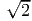

A systematic treatment of numerical methods is provided in conventional courses and textbooks on numerical analysis. But a few very common issues, that emerge in similar form in many numerical methods, are discussed here.
We consider the problem of solving a single equation, where a function of one variable equals a constant. Suppose a function f(x) is given and we want to find its root(s) x*, such that f(x*) = 0.
A popular method is that of Newton. The tangent at any point can be used to guess the location of the root. Since by Taylor expansion f(x*) = f(x) + f′(x)(x*- x) + O(x*- x)2, the root can be estimated as x* ≈ x - f(x)∕f′(x) when x is close to x*. The procedure is applied iteratively: xn+1 = xn - f(xn)∕f′(xn). For example, it is possible to solve sin(3x) = x in this way, by finding the roots of f(x) = sin(3x) - x. Starting with x0 = 1, the procedure produces the numbers shown in column 2 of table 2.1. The sequence quickly approaches a root.
| xn
| ||
| n | x 0 = 1 | x0 = 2 |
| 0 | 1 | 2 |
| 1 | 0.7836... | 3.212... |
| 2 | 0.7602... | 2.342... |
| 3 | 0.7596... | 3.719... |
| 4 | 0.7596... | -5.389... |
Newton’s method is so fast, computers may use it internally to calculate the square root, x = , with f(x) = x2 - y. This only requires substractions, divisions, and multiplications. For example, the square root of 2 can be quickly calculated using only divisions and subtractions with f(x) = x2 - 2. With a starting value of x0 = 2, we obtain the numbers shown in Table 2.2. Eight significant digits are achieved after only four iterations.
| n | xn |
| 0 | 2 |
| 1 | 1.5 |
| 2 | 1.41666... |
| 3 | 1.414216... |
| 4 | 1.4142136... |
|  | 1.4142136... |
But Newton’s method can easily fail to find a root. Returning to the previous example, with x0 = 2 the iteration never converges, as indicated in the last column of table 2.1.
Robustness may be preferable to speed. Is there a method that is certain to find a root? The simplest and most robust method is bisection, which follows the “divide-and-conquer” strategy. Suppose we start with two x-values where the function f(x) has opposite signs. Any continuous function must have a root between these two values. We then evaluate the function halfway between the two endpoints and check whether it is positive or negative there. This restricts the root to that half of the interval on whose ends the function has opposite signs. Table 2.3 shows an example. With the bisection method the accuracy is only doubled at each step, but the root is found for certain.
| n | xlower | xupper |
| 0 | 0.1 | 2 |
| 1 | 0.1 | 1.05 |
| 2 | 0.575 | 1.05 |
| 3 | 0.575 | 0.8125 |
| 4 | 0.6938... | 0.8125 |
| 5 | 0.7531... | 0.8125 |
| 15 | 0.7596... | 0.7597... |
| 16 | 0.7596... | 0.7596... |
There are more methods for finding roots than the two just mentioned. Each method has its advantages and disadvantages. Bisection is most general but is awfully slow. Newton’s method is less general but much faster. Such a trade-off between generality and efficiency is often inevitable. This is so because efficiency is often achieved by exploiting a specific property of a system. For example, Newton’s method makes use of the differentiability of the function; the bisection method does not and works equally well for functions that cannot be differentiated.
The bisection method is guaranteed to succeed only if it brackets a root to begin with. There is no general method to find appropriate starting values, nor do we generally know how many roots there are. For example, a function can reach zero without changing sign; our criterion for bracketing a root does not work in this case. In principle, a continuous function can in any interval drop rapidly, cross zero, and then increase again, making it impossible to exclude the existence of roots.
The problem becomes even more severe for finding roots in more than one variable, say under the simultaneous conditions g(x,y) = 0,f(x,y) = 0. Newton’s method can be extended to several variables, but bisection cannot. How could one be sure all zeros are found in this vast space? There is no method that is guaranteed to find all roots. This is not a deficiency of the numerical methods, but is due to the intrinsic nature of the problem. Unless a good, educated initial guess can be made, finding roots in more than a few variables may be fundamentally and practically impossible. (This is in stark contrast to solving a system of linear equations, which is an easy numerical problem.)
Root finding can be a numerically difficult problem, because there is no method that always succeeds.
Numerical problems can be difficult for other reasons too.
When small errors in the input data, of whatever origin, can lead to large errors in the resulting output data, the problem is called “numerically badly-conditioned” or if the situation is especially bad, “numerically ill-conditioned.” An example is solving the system of linear equations
The theme of error propagation has many facets. Errors introduced during the calculation, namely by roundoff, can also become critical, in particular when errors are amplified not only once, but repeatedly. Let me give one such example for the successive propagation of inaccuracies.
Consider the difference equation 3yn+1 = 7yn - 2yn-1 with the two starting values y0 = 1 and y1 = 1∕3. The analytic solution to this equation is yn = 1∕3n. If we iterate numerically with initial values y0 = 1 and y1 = 0.3333 (which approximates 1/3), then column 3 of table 2.4 shows what happens. For comparison, the second column in the table shows the numerical value of the exact solution. The numerical iteration breaks down after a few steps.
| yn
| |||
| n | y n = 1∕3n | y 1 = 0.3333 | y1 = 1.∕3. |
| 0 | 1 | 1 | 1 |
| 1 | 0.333333 | 0.3333 | 0.333333 |
| 2 | 0.111111 | 0.111033 | 0.111111 |
| 3 | 0.037037 | 0.0368777 | 0.0370372 |
| 4 | 0.0123457 | 0.0120257 | 0.0123459 |
| 5 | 0.00411523 | 0.00347489 | 0.00411569 |
| 6 | 0.00137174 | 9.09399E-05 | 0.00137267 |
| 7 | 0.000457247 | -0.0021044 | 0.000459095 |
| 8 | 0.000152416 | -0.0049709 | 0.00015611 |
| 9 | 5.08053E-05 | -0.0101958 | 5.81938E-05 |
| 10 | 1.69351E-05 | -0.0204763 | 3.17123E-05 |
| 11 | 5.64503E-06 | -0.0409809 | 3.51994E-05 |
| 12 | 1.88168E-06 | -0.0819712 | 6.09904E-05 |
| 13 | 6.27225E-07 | -0.163946 | 0.000118845 |
| 14 | 2.09075E-07 | -0.327892 | 0.000236644 |
The reason for the rapid accumulation of errors can be understood from the analytic solution of the difference equation with general initial values: yn = c1(1∕3)n + c 22n. The initial conditions for the above example are such that c1 = 1 and c2 = 0, so that the growing branch of the solution vanishes, but any error seeds the exponentially growing contribution. Indeed, the last few entries in the third column of table 2.4 double at every iteration; they are dominated by the 2n contribution.
Even if y1 is assigned exactly 1/3 in the computer program, using single-precision numbers, the roundoff errors spoil the solution (last column in table 2.4). This iteration is “numerically unstable”; the numerical solution quickly grows away from the true solution. Numerical instabilities are due to the method rather than the mathematical nature of the equation being solved. (Contrary to the previous example, where the ultimate source of error was the coefficients in the equations themselves.) For the same problem one method might be unstable while another method is stable.
In summary, we have encountered a number of issues that come up in numerical computations. There is commonly a tradeoff between robustness and speed. There may be no algorithm that succeeds for certain, as for example root finding in one variable (in principle) and root finding in many variables (in practice). The propagation of errors in input data or due to roundoff can lead to difficulties. Solutions can be very sensitive to uncertainties in the input data, e.g. a system of linear equations that is nearly degenerate. This sensitivity can be assessed, but that involves generally more work than obtaining the solution. Difficulties may be intrinsic to the problem or intrinsic to the method. Another concept, one barely touched on here, is computational efficiency. It is discussed in chapters 8 to 10.
Recommended Reading: A practically oriented classic is Press, Teukolsky, Vetterling & Flannery, Numerical Recipes. This voluminous book describes a broad and selective collection of methods and provides insightful lessons in numerical analysis; see www.nr.com for further information.
Brainteaser: An illustrative example of a function that suddenly crosses zero is f(x) = 3π4x2 + ln[(x - π)2], which dips below zero only within a tiny interval. Although it is easy to show that f(x) has two roots, graphing the function with any software will not reveal the sign change.